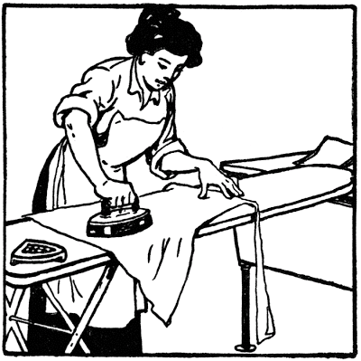

Tuesday, August 31, 2010
Praxis: A new comment from a Designated Marksman in Afghanistan on an old post but worthy of greater notice.
A new comment on this old post.
americansldr11b said... For those of you that feel the need to throw your comments out there and have yet to set your boots to the sands, grape fields, or mountains of the country that I currently sit... Yes, the training of the DM is not that of the sniper and is not that way by purpose... The sniper is valuable in his own right but few units or commanders have the experience or the training to employ snipers as they should be.
At this time in our country's fight, few commanders trust the sniper to manuever on his own or in a shooter/spotter team and to that affect even make the call on taking a shot. There are far too many rules and things to consider in the way our country fights in these times of political BS.
The DM on the other time is designed by nature to do no more than bridge the gap between the grunts and the snipers. A simple soldier looking to his DM as an asset, of trust, as eyes and ears of his fellow soldiers. To look from the streets of no mans land and see your DM watching, waiting, controlling the surroundings. The DM is by design the best marksman "within" his unit.
It isnt the (one shot, one kill) the DM looks for but a chance to meet the enemy at extended distance as to create time and space between the enemy and the boots on the ground. The DM fills a role that has in the past been void. For the soldiers within the unit that have a DM within them, he is an asset that in "this" country can turn the tides of an often suprise encounter with the enemy.
I have yet to meet an enemy in this country that would tell you the site of a "long gun" within a unit on the ground is not an unnerving one. (Best regards to the fighters on the couch back home) Signed..... DM 10th mountain Division, Afghanistan. (M14EBR) (118 Special Ball, Match Grade)
Monday, August 30, 2010
Never, ever, eat a ballpark hotdog in Starkville, Mississippi.
Sunday, August 29, 2010
Somebody thinks there's a Middle East war coming.
Either that or they want to lay in as much as possible before Obama puts an embargo on them.
NOTE: I am uninterested in stale arguments over Zionism here. I post this as a bit of military intel to prod your own preparations for when gasoline goes to $15.00 a gallon and Hezbollah and Iranian sleeper cells become active in the continental U.S.
NOTE: I am uninterested in stale arguments over Zionism here. I post this as a bit of military intel to prod your own preparations for when gasoline goes to $15.00 a gallon and Hezbollah and Iranian sleeper cells become active in the continental U.S.

Saturday, August 28, 2010
Jeers from the Peanut Gallery: International Brotherhood of Willful Simpletons strikes back.
- Well, we have these charming rejoinders from the brave but anonymous International Brotherhood of Willful Simpletons:
-

-
-
Anonymous said...No worries on the firing line.
Mike won't be there....
Oikophobia.
- Mr. Tweedy: [being attacked by the chickens] MRS. TWEEDY! The chickens are revolting!
Mrs. Tweedy: [not paying attention] Finally, something we agree on.
Casus Belli: Of Tripwires and Simpletons Who Risk Nothing Wanting to See Them Tripped.
The Old Powder House in Somerville, Massachusetts as it stood in 1935.
The cumulative effect of such individual reasons, stacked one upon the other, will later be seen as background, the fuel, the dry grass if you will, of the conflagration.
The prairie fire will be started by a single spark, or series of sparks -- incidents so compelling that no one, given the common understanding of the explosive tinder building up, will be surprised that it happened, only when it happened.
The Founders experienced such a rising series of casus belli, each new outrage of the King's ministerial government piling upon the one before, causing reactions among the liberty-loving populace COMMENSURATE WITH THE THREAT.
The Stamp Act caused the colonists -- WHO DID NOT YET THINK OF THEMSELVES AS REVOLUTIONARIES but merely English citizens whose rights under the English Constitution were being abrogated -- to react with violent demonstrations, assaults on royal lackeys and their property, tar and feathering, etc. The resistance was sufficient to get the Crown to back down.
The Boston Massacre was not the tripwire for general war. Why? Because neither the general public nor the men who were increasingly viewing themselves as revolutionaries were ready for such a step. Indeed, John Adams and other Founders acted as DEFENSE attorneys for the British soldiers at the subsequent trial. Yet the propaganda that the Founders made of this incident was absolutely brilliant, and essential to laying the groundwork for independence.
The tax on tea was not the tripwire for general war, again because no one was ready. The political pretext for resorting to defensive violence had not yet been made. There was no thought that the officers of the King should be targeted, but the tea itself? A brilliant choice of targets and an impeccably executed plan of vandalism. It was Sam Adam's finest hour.
Then came the Intolerable Acts and the continuing battle of the Crown forces with smugglers. Revenue cutters were burned, customs men harassed (NOTE: NOT KILLED), and as British troops flowed into to overawe the malefactors, the liberty-minded colonists began to take over the militia system or create their own units independent of the colonial structure.
Then came the British attempt to seize militia arms and powder. The militias responded to several of these raids by mobilizing around and in front of the British columns, culminating in The Powder Alarm of 1774.
When the war did start -- the tripwire if you will -- was thanks to a miscalculation by the British that they could march out of Boston, seize or destroy the arms and powder and get back to town before the militia could react. Even the mustering of the Lexington militia on the green was in the spirit of the Powder Alarm. Captain Parker actually backed his little force up, away from the road, so as not to block the ministerial troops path, but yet to make a demonstration that they had better not get out of hand in the village.
But the actual tripwire, the "shot heard 'round the world," could itself have been a negligent discharge by a nervous regular or militiaman. The Brits of course blamed the militia and vice versa. But the conduct of Parker's formation and the lop-sided odds, made it seem likely to the rest of the colonials that the "bloody lobsters" had started it. And remember, about a third of those colonials thought that the "armed rabble" had it coming, and that it was about time the King's men did something.
In 1861, the tripwire was the Confederate bombardment of Fort Sumter, South Carolina. Prior to that incident, Lincoln was faced with a huge political problem. A majority of the people of the North wanted to avoid a civil war. So Lincoln contrived to get the Confederates to cede the moral high ground.
Toombs, as we know now with 20-20 hindsight, was absolutely correct. Lincoln's gambit worked and the Confederacy took the bait to it's peoples' eternal sorrow. Imagine the Federal rout of the First Battle of Bull Run WITHOUT the justification of Fort Sumter. The pressure on Lincoln to stop the war and negotiate would have become immense. Arrogance and stupidity killed the Confederacy at the very first. That it took four years for the Federals to subdue the South in cruel war was a testament to the Southrons' courage and tenacity. BUT THE CONFEDERATES GAVE THE FEDERALS THE FIRST, AND ARGUABLY MOST IMPORTANT, STICK WITH WHICH TO BEAT THEM.
Fast forward to today.
First, one of the arguments most often heard in simpleton quarters is "THEY" (whoever they are) are "too smart to start a war" and will simply gradually increase oppressive measures until they achieve our absolute slavery.
This assigns some sort of god-like power of restraint to the largest, most inefficient, ponderous, corrupt and mistake-prone bureaucracy ever created in this country: the federal government of the 21st Century. Only an ignorant simpleton would believe such a tall tale.
For the better part of two years, one agency of that government, the Bureau of Alcohol, Tobacco, Firearms and Explosives has been chasing a phantom opponent simply because one of their favorite snitches told them he was a confederate of a law-abiding man that they wished to see squashed. ATF lawyers have demanded to know from expert witnesses in depositions if they knew this man, always eliciting the answer, "I know of no such person." ATF agents have been dispatched to run down every lead, every rumor, searching for this nemesis of the Chief Counsel's Office WHO NEVER EXISTED. Millions of taxpayer dollars have certainly been wasted in the search.
This is hardly evidence of federal omniscience or omnipotence.
Secondly, the argument that "they" will be patient enough to play the long game of gradual tyranny reckons without our own ability, LIKE THE FOUNDERS SHOWED US, to resist with lesser measures and gradually make our would-be oppressors so frustrated and crazy with our resistance that they attack us with deadly force, by accident or design.
The tools available to us to accomplish that are the same as were in the liberty toolbag of the Founders: strikes, shunning, petty yet strategic vandalism, street theater, demonstrations, smuggling, etc. The fact that we haven't fully employed these tools is an argument AGAINST the preemptive use of deadly force on our part, not FOR it.
Recall Michael Collins:
Third, there is an argument offered by some (many more than actually have it as a valid reason) that to engage in lesser acts of resistance than shooting -- breaking political party windows or vandalism of ARRA signs for example -- will compromise their "operational security" for the big event when shooting starts.
Perhaps. But only if they're stupid in carrying out such operations. We are not talking about carrying out operations against defended targets, for crying out loud. Nothing is more vulnerable than the easy pickings of an ARRA sign on a deserted road at two o'clock in the morning. Besides, engaging in the process of operational planning and execution exercises the tactical muscles for when the shooting DOES start. Each who makes this argument must look into his or her own heart for the answer to whether or not this is simple reluctance to do ANYTHING rather than an exercise in proper prudence.
But in any case, unless sanity breaks out among our would-be tyrannizers, at some point there will be an initiating event of deadly violence by Leviathan against a man or woman who simply wishes to be left alone.
Let us then look at what the Three Percenters have staked out as tripwires:
Any more restrictive firearms laws, is a big one. Katrina-like confiscation obviously would be resisted by force at out doorsteps first, and then taken to the enemy in maneuver warfare style. But what of lesser moves? A "gun show loophole" bill would be resisted first by hosting our own Fed-free gunshows, provoking a response. Any ammunition restrictions would be resisted first by rolling our own, smuggling, theft, etc. Again, provoking a response, and then, a spasm of targeted counter-violence.
Enforcing "health-care" would be met by refusal to pay the fines, refusal to go willingly to jail, and eventually, at the point of a gun. Again, a PROCESS OF RESISTANCE only ending in deadly violence if Leviathan chooses to do so. And they will, if we do our part right.
Federal election tampering, or outright theft, is another. Here I can think of an excellent use of tar and feathering of local and state election officials, breaking of windows, and other vandalism as a first response. If the election is certified despite these moves, then the situation will rapidly move to violence without doubt.
But why, in any of these cases, should we cede the moral high ground and shoot first? Just because some of us are tired of waiting? Or because they're too scared to use lesser measures? Or because they risk nothing nothing in urging US to take the first shot? Such people are urging us to the trip the wire without consequence to themselves. For if they lack the guts to start acting like free people and engage in lesser forms of resistance, what evidence is there that they will go to the extreme when it is called for?
I mean besides their own hot air reduced to keystrokes.
I agree that not all of us are public figures like myself, with names and addresses well known to the PTB. Nor should we be. My JOB is to be a living, breathing gambit -- daring the Power to take a shot at me, and gradually defeating them with every passing day that they do not make an example of me -- exposing the lie of the man behind the curtain that the Wizard is all knowing and all powerful, encouraging others to resist by simply existing as a symbol of the federal government's true vacillation and impotence.
But if YOU are urging us IN AN EASILY TRACEABLE COMMUNICATION to engage in deadly violence against the PTB, then you are not a "grey man" anyway. You trade that when you speak out on the Net. Only a simpleton thinks otherwise. So, telling me that you are not willing to risk lesser violence in order to preserve the operational security that you just threw away by telling me in this venue is hardly persuasive of anything except to reasonably doubt your intelligence or courage or both. Likewise, people who urge others to begin shooting in such a venue have to be asked: who are they really serving? And what are they risking by doing so?
Finally, I ask again, who among us on that final day the wire is tripped will not desperately wish that we had ONE MORE DAY, ONE MORE HOUR, to train, to recruit, and see to our own logistics for the killing time?
If present events play out into a likely future, that wire WILL be tripped. But until it is, it is your responsibility to do everything you can using lesser measures to avoid it and, failing that, to prepare for that day to fight and to win.
No Fort Sumters. No OKC bombings. Let the enemies of the Founders' Republic make those mistakes, not us.
Mike
III
Casus belli is a Latin expression meaning the justification for acts of war. Casus means "incident", "rupture" or indeed "case", while belli means "of war". . . The term came into wide usage in the seventeenth and eighteenth centuries with the writings of Hugo Grotius (1625), Cornelius van Bynkershoek (1737), and Jean-Jacques Burlamaqui (1748), among others, and the rise of the political doctrine of jus ad bellum or "just war theory". Informal usage varies beyond its technical definition to refer to any "just cause" a nation may claim for entering into a conflict. As such, it has been used both retroactively to describe situations in history before the term came into wide usage and in the present day when describing situations when war has not been formally declared. -- Wikipedia.Forgive me for all of those who are not simpletons, but it appears I must insult your intelligence with basic definitions and rudimentary common sense in order to attempt to reach a few hardheads who continue to foam at the mouth, eager to plunge their country into civil war under circumstances which will guarantee defeat of the cause which they claim to espouse.
"Informal usage varies beyond its technical definition to refer to any "just cause" a nation may claim for entering into a conflict."When I use the term casus belli in posts, it is merely pointing out that the particular trend or incident is adding to the just cause by which the civil war, when it breaks out, will be justified.
The cumulative effect of such individual reasons, stacked one upon the other, will later be seen as background, the fuel, the dry grass if you will, of the conflagration.
The prairie fire will be started by a single spark, or series of sparks -- incidents so compelling that no one, given the common understanding of the explosive tinder building up, will be surprised that it happened, only when it happened.
The Founders experienced such a rising series of casus belli, each new outrage of the King's ministerial government piling upon the one before, causing reactions among the liberty-loving populace COMMENSURATE WITH THE THREAT.
The Stamp Act caused the colonists -- WHO DID NOT YET THINK OF THEMSELVES AS REVOLUTIONARIES but merely English citizens whose rights under the English Constitution were being abrogated -- to react with violent demonstrations, assaults on royal lackeys and their property, tar and feathering, etc. The resistance was sufficient to get the Crown to back down.
The Boston Massacre was not the tripwire for general war. Why? Because neither the general public nor the men who were increasingly viewing themselves as revolutionaries were ready for such a step. Indeed, John Adams and other Founders acted as DEFENSE attorneys for the British soldiers at the subsequent trial. Yet the propaganda that the Founders made of this incident was absolutely brilliant, and essential to laying the groundwork for independence.
The tax on tea was not the tripwire for general war, again because no one was ready. The political pretext for resorting to defensive violence had not yet been made. There was no thought that the officers of the King should be targeted, but the tea itself? A brilliant choice of targets and an impeccably executed plan of vandalism. It was Sam Adam's finest hour.
Then came the Intolerable Acts and the continuing battle of the Crown forces with smugglers. Revenue cutters were burned, customs men harassed (NOTE: NOT KILLED), and as British troops flowed into to overawe the malefactors, the liberty-minded colonists began to take over the militia system or create their own units independent of the colonial structure.
Then came the British attempt to seize militia arms and powder. The militias responded to several of these raids by mobilizing around and in front of the British columns, culminating in The Powder Alarm of 1774.
The Powder Alarm caused smuggling of war supplies to increase and militias to redouble to their training. No one went to war, because neither side was ready.The Powder Alarm was a massive popular reaction to the removal of gunpowder from a magazine by British soldiers under orders from General Thomas Gage, royal governor of the Province of Massachusetts Bay, on September 1, 1774. In response to this action, amid rumors that blood had been shed, alarm spread through the countryside as far as Connecticut, and American Patriots sprang into action, fearing that war was at hand.
Although it proved to be a false alarm, the Powder Alarm caused political and military leaders to proceed more carefully in the days ahead, and essentially provided a "dress rehearsal" for the Battle of Lexington and Concord seven months later. Furthermore, actions on both sides to control weaponry, gunpowder, and other military supplies became more contentious, as the British sought to bring military stores more directly under their control, and the Patriot colonists sought to acquire them for their own use. -- Wikipedia.
When the war did start -- the tripwire if you will -- was thanks to a miscalculation by the British that they could march out of Boston, seize or destroy the arms and powder and get back to town before the militia could react. Even the mustering of the Lexington militia on the green was in the spirit of the Powder Alarm. Captain Parker actually backed his little force up, away from the road, so as not to block the ministerial troops path, but yet to make a demonstration that they had better not get out of hand in the village.
But the actual tripwire, the "shot heard 'round the world," could itself have been a negligent discharge by a nervous regular or militiaman. The Brits of course blamed the militia and vice versa. But the conduct of Parker's formation and the lop-sided odds, made it seem likely to the rest of the colonials that the "bloody lobsters" had started it. And remember, about a third of those colonials thought that the "armed rabble" had it coming, and that it was about time the King's men did something.
In 1861, the tripwire was the Confederate bombardment of Fort Sumter, South Carolina. Prior to that incident, Lincoln was faced with a huge political problem. A majority of the people of the North wanted to avoid a civil war. So Lincoln contrived to get the Confederates to cede the moral high ground.
By April 4, President Lincoln . . . ordered merchant vessels escorted by the United States Navy to Charleston. On April 6, 1861, Lincoln notified South Carolina Governor Francis W. Pickens that "an attempt will be made to supply Fort Sumter with provisions only, and that if such attempt be not resisted, no effort to throw in men, arms, or ammunition will be made without further notice, [except] in case of an attack on the fort."In response, the Confederate cabinet, meeting in Montgomery, decided on April 9 to open fire on Fort Sumter in an attempt to force its surrender before the relief fleet arrived. Only Secretary of State Robert Toombs opposed this decision: he reportedly told Jefferson Davis the attack "will lose us every friend at the North. You will only strike a hornet's nest. ... Legions now quiet will swarm out and sting us to death. It is unnecessary. It puts us in the wrong. It is fatal."
Toombs, as we know now with 20-20 hindsight, was absolutely correct. Lincoln's gambit worked and the Confederacy took the bait to it's peoples' eternal sorrow. Imagine the Federal rout of the First Battle of Bull Run WITHOUT the justification of Fort Sumter. The pressure on Lincoln to stop the war and negotiate would have become immense. Arrogance and stupidity killed the Confederacy at the very first. That it took four years for the Federals to subdue the South in cruel war was a testament to the Southrons' courage and tenacity. BUT THE CONFEDERATES GAVE THE FEDERALS THE FIRST, AND ARGUABLY MOST IMPORTANT, STICK WITH WHICH TO BEAT THEM.
Fast forward to today.
First, one of the arguments most often heard in simpleton quarters is "THEY" (whoever they are) are "too smart to start a war" and will simply gradually increase oppressive measures until they achieve our absolute slavery.
This assigns some sort of god-like power of restraint to the largest, most inefficient, ponderous, corrupt and mistake-prone bureaucracy ever created in this country: the federal government of the 21st Century. Only an ignorant simpleton would believe such a tall tale.
For the better part of two years, one agency of that government, the Bureau of Alcohol, Tobacco, Firearms and Explosives has been chasing a phantom opponent simply because one of their favorite snitches told them he was a confederate of a law-abiding man that they wished to see squashed. ATF lawyers have demanded to know from expert witnesses in depositions if they knew this man, always eliciting the answer, "I know of no such person." ATF agents have been dispatched to run down every lead, every rumor, searching for this nemesis of the Chief Counsel's Office WHO NEVER EXISTED. Millions of taxpayer dollars have certainly been wasted in the search.
This is hardly evidence of federal omniscience or omnipotence.
Secondly, the argument that "they" will be patient enough to play the long game of gradual tyranny reckons without our own ability, LIKE THE FOUNDERS SHOWED US, to resist with lesser measures and gradually make our would-be oppressors so frustrated and crazy with our resistance that they attack us with deadly force, by accident or design.
The tools available to us to accomplish that are the same as were in the liberty toolbag of the Founders: strikes, shunning, petty yet strategic vandalism, street theater, demonstrations, smuggling, etc. The fact that we haven't fully employed these tools is an argument AGAINST the preemptive use of deadly force on our part, not FOR it.
Recall Michael Collins:
“They can jail us. They can shoot us. . . BUT . . . we have a weapon more powerful than any in the whole arsenal of the British Empire! That weapon is our refusal! Our refusal to bow to any order but our own! Any institution but our own!”That refusal, if we practice it diligently, adamantly, will force the frustrated leviathan to use deadly force.
Third, there is an argument offered by some (many more than actually have it as a valid reason) that to engage in lesser acts of resistance than shooting -- breaking political party windows or vandalism of ARRA signs for example -- will compromise their "operational security" for the big event when shooting starts.
Perhaps. But only if they're stupid in carrying out such operations. We are not talking about carrying out operations against defended targets, for crying out loud. Nothing is more vulnerable than the easy pickings of an ARRA sign on a deserted road at two o'clock in the morning. Besides, engaging in the process of operational planning and execution exercises the tactical muscles for when the shooting DOES start. Each who makes this argument must look into his or her own heart for the answer to whether or not this is simple reluctance to do ANYTHING rather than an exercise in proper prudence.
But in any case, unless sanity breaks out among our would-be tyrannizers, at some point there will be an initiating event of deadly violence by Leviathan against a man or woman who simply wishes to be left alone.
Let us then look at what the Three Percenters have staked out as tripwires:
Any more restrictive firearms laws, is a big one. Katrina-like confiscation obviously would be resisted by force at out doorsteps first, and then taken to the enemy in maneuver warfare style. But what of lesser moves? A "gun show loophole" bill would be resisted first by hosting our own Fed-free gunshows, provoking a response. Any ammunition restrictions would be resisted first by rolling our own, smuggling, theft, etc. Again, provoking a response, and then, a spasm of targeted counter-violence.
Enforcing "health-care" would be met by refusal to pay the fines, refusal to go willingly to jail, and eventually, at the point of a gun. Again, a PROCESS OF RESISTANCE only ending in deadly violence if Leviathan chooses to do so. And they will, if we do our part right.
Federal election tampering, or outright theft, is another. Here I can think of an excellent use of tar and feathering of local and state election officials, breaking of windows, and other vandalism as a first response. If the election is certified despite these moves, then the situation will rapidly move to violence without doubt.
But why, in any of these cases, should we cede the moral high ground and shoot first? Just because some of us are tired of waiting? Or because they're too scared to use lesser measures? Or because they risk nothing nothing in urging US to take the first shot? Such people are urging us to the trip the wire without consequence to themselves. For if they lack the guts to start acting like free people and engage in lesser forms of resistance, what evidence is there that they will go to the extreme when it is called for?
I mean besides their own hot air reduced to keystrokes.
I agree that not all of us are public figures like myself, with names and addresses well known to the PTB. Nor should we be. My JOB is to be a living, breathing gambit -- daring the Power to take a shot at me, and gradually defeating them with every passing day that they do not make an example of me -- exposing the lie of the man behind the curtain that the Wizard is all knowing and all powerful, encouraging others to resist by simply existing as a symbol of the federal government's true vacillation and impotence.
But if YOU are urging us IN AN EASILY TRACEABLE COMMUNICATION to engage in deadly violence against the PTB, then you are not a "grey man" anyway. You trade that when you speak out on the Net. Only a simpleton thinks otherwise. So, telling me that you are not willing to risk lesser violence in order to preserve the operational security that you just threw away by telling me in this venue is hardly persuasive of anything except to reasonably doubt your intelligence or courage or both. Likewise, people who urge others to begin shooting in such a venue have to be asked: who are they really serving? And what are they risking by doing so?
Finally, I ask again, who among us on that final day the wire is tripped will not desperately wish that we had ONE MORE DAY, ONE MORE HOUR, to train, to recruit, and see to our own logistics for the killing time?
If present events play out into a likely future, that wire WILL be tripped. But until it is, it is your responsibility to do everything you can using lesser measures to avoid it and, failing that, to prepare for that day to fight and to win.
No Fort Sumters. No OKC bombings. Let the enemies of the Founders' Republic make those mistakes, not us.
Mike
III
Friday, August 27, 2010
A short but sweet challenge to all of you mokes who keep shouting, "If not now, when?!?"
Have you broken any windows yet?
Vandalized any ARRA signs?
So why are you so eager to jump to guns?
If you don't have the cojones to do the one, why are you screaming to the rest of us to do the other?
Here's a suggestion: Shut the hell up about the last step until you do some intermediate steps.
Vandalized any ARRA signs?
So why are you so eager to jump to guns?
If you don't have the cojones to do the one, why are you screaming to the rest of us to do the other?
Here's a suggestion: Shut the hell up about the last step until you do some intermediate steps.
Restore the Constitution: Round Three.
As Pete says, very interesting timing. I'd be interested in hearing from volunteers from Birmingham area.
Remember who we are: Liberty, love and leadership.
"Triumph of faith over idolatry" by Jean Baptiste Theodon,French Baroque Era Sculptor, 1645-1713.
Wikipedia defines love thusly:
Yet there are those of us -- or at least those who claim to be us -- who have this same lack. This same incapacity to love, to make love the basis for our struggle to preserve our liberty and that of our posterity.
A man who fights for liberty, without being motivated by the love of others, the love of country, the love of God, is engaging in a selfish, commercial transaction. And, I might add, will likely fail in the attempt and become the beast he seeks to destroy.
He will fight only until he gets what he wants and makes the most inconstant of allies.
Such a man will not stand up into a hail of machine gun fire and suicidally close with a bunker full of screaming enemies who are busy killing his friends. He will not roll onto to a grenade to save his buddy in the same foxhole. He will be selfishly happy to watch you do it, of course. He will later say that this is intelligent pragmatism.
Likewise, such a man is unfit to lead other men, for he will fail them, he will sell them out, and his failures of judgment, made because they are not motivated by love, will be fatal to the cause of liberty.
Such men are evident today, in our movement to reclaim the Founders' Republic. How many times have you heard the call to begin firing now, the impatience with waiting until the conflict is forced upon us? Such men have neither heart nor head, for who, being motivated by love, would want to bring about ghastly civil war BEFORE it was forced him, with all the inevitable killing of and cruelty to innocents that that entails? And who, knowing how unprepared we all are for such a conflict, would not want to make use of one more day, one more hour, to organize, train and prepare? Only someone who does not, who cannot love.
For a man who loves is reluctant to war, is patient with the irritations and fears of waiting, simply because he knows its costs.
Such men without love in their hearts engender in others a feeling of despair, of inevitable defeat. Not loving enough, they take counsel of their fears and it spreads around to others like a debilitating oil slick.
Yet we can and will win, even if we wait to respond until we can wait no longer. A real leader of liberty-minded individuals, motivated by love yet wide-wake to the dangers, will lead by exuding resolve but also calmness, confidence and optimism. He must be intelligent, he must be dedicated, he must share the dangers and the sacrifice, but above all he must be motivated by love -- love of family, love of country, love of humanity and love of God.
Anyone who tells you differently is selling something, and the name of that something is defeat.
Mike
III
General Robert E. Lee stated that an effective commander must love his men, but he must also be prepared to order the destruction of the very thin that he loves. That is not just prose. This paradox captures the essence of combat leadership. It is the heart of the art of command. On a conscious level, most commanders comprehend that burden, but the question remains: Are we mentally and emotionally prepared for such demands? Before the first shot is fired, the leader must look squarely in the mirror and gather the moral strength necessary to order his men into harm's way, to see them killed and maimed, to look into the eyes of the wounded and upon the faces of the dead, yet not lose his fighting spirit. Moreover, the true test is to look oneself in the mirror AFTER young men who trusted their commander are killed and maimed, and do it all over again without losing the will to violently close with the enemy. Such force of will requires supreme mental toughness and strong "emotional shock absorbers" to rebound from these devastating blows while maintaining one's convictions. It requires enormous grit to weather such anguish and not detach oneself from the deep feelings of affinity and love for one's men. The commander who severs that link forfeits the vital buttress of brotherhood formed in shared danger and sacrifice that binds him to his men and makes war bearable. He will soon find himself alone, increasingly drawing from his "well of fortitude" until the bucket comes up dry and his will shatters. Once this happens, the commander ceases to inspire and lead; his unit becomes a formless mass of souls bereft of the sense of shame that enables men to bear war's horror yet persevere with honor. He becomes a mere spectator to the slaughter of his men. In short, the art of command is about winning the love of one's men, and then some day having to use that love to have them willingly risk terrible injury or death and violently take the lives of others. The skill and respect necessary to apply this art must be nurtured in peacetime through study of the human psyche both in combat and through vicarious experience. The passion to command is embodied in the commander's willpower, his love for his men, and personal aggressiveness in battle. The love for his men is what allows a commander to apply and maintain his will power, and the conviction and aggressiveness to close with the enemy. He must be able to literally and figuratively look himself in the mirror each day of combat and know he has earnestly applied himself and had nurtured a passion for command. With a melancholy rigor he must apply himself in the serious study of warfare, its affects on those who fight, and earn the moral authority that grows from leading in the "zone of aimed fire." I will always harbor doubts over my efforts prior to and during combat, whether or not my personal preparation and leadership was all it could be. For the rest of my life -- each time I look in the mirror I will be acutely reminded of my shortcomings, and a piece of my heart will chip away, for in the shadows of my eyes I will see their faces, staring back at me -- for the rest of my life. -- COL B.P. McCoy, USMC, The Passion of Command: The Moral Imperative of Leadership, pp. 77-78.We stand today upon a precipice, staring at a ghastly possible future rushing at us from across a deep chasm -- angry portents and dark clouds, behind which may gallop the Four Horsemen of the Apocalypse -- the grim reapers of civil war. The liberty, lives and futures of our children and grandchildren likely rest upon how we conduct ourselves NOW. We must prepare ourselves to stand the coming storm without losing sight of why we are so determined, as the Founders were -- to risk everything to be free. In doing so we must not become the very monster we purport to fight. We must remain human in an inhuman time. We must remember who we are. We must love.
Wikipedia defines love thusly:
Love is the emotion of strong affection and personal attachment. In philosophical context, love is a virtue representing all of human kindness, compassion, and affection. In religious context, love is not just a virtue, but the basis for all being ("God is love"), and the foundation for all divine law (Golden Rule).In his magnificent novel of the Spartans at Thermopylae, Gates of Fire, Steven Pressfield, through the character of Dienekes -- considered by his fellow soldiers to be the bravest of them all -- explores the question, "What is the antithesis of fear?"
"All my life," Dienekes began, "one question has haunted me. What is the opposite of fear? . . . To call it aphobia, fearlessness, is without meaning. This is just a name, thesis expressed as antithesis. To call the opposite of fear fearlessness is to say nothing. I want to know its true obverse, as day of night and heaven of earth." "Expressed as a positive," Ariston ventured. "Exactly! . . . How does one conquer fear of death, that most primordial of terrors, which resides in our very blood, as in all life, beast as well as men? . . . Dogs in a pack find courage to take on a lion. Each hound knows his place. He fears the dog ranked above and feeds off the fear of the dog below. Fear conquers fear. This is how we Spartans do it, counterpoising to fear of death a greater fear: that of dishonor. Of exclusion from the pack. . . But is that courage? Is not acting out of fear of dishonor still, in essence, acting out of fear?" Alexandros asked what he was seeking. "Something nobler. A higher form of the mystery. Pure. Infallible."Later, Dienekes answers his own question:
A messenger appeared, summoning Dienekes to Leonidas’ council. My master motioned me to accompany him. Something had changed within him; I could sense it as we picked our way among the network of trails that crisscrossed the camps of the allies. “Do you remember the night, Xeo, when we sat with Ariston and Alexandros and spoke of fear and its opposite?” I said I did. “I have the answer to my question. Our friends the merchant and the Scythian have given it to me.” His glance took in the fires of the camp, the nations of the allies clustered in their units, and their officers, whom we could see, like us approaching from all quarters the king’s fire, ready to respond to his needs and receive his instructions. “The opposite of fear,” Dienekes said, “is love.”Another of my favorite novels, Once an Eagle by Anton Myrer, tells the story of Sam Damon, an up-from-the-ranks Army officer, and his lifelong struggle with his nemesis, a well-connected, polished careerist officer named Courtney Massengale. Damon first encounters Massengale in France in 1918 when the staff officer gets lost and on his way to a forward command post and runs into some enlisted men of Damon's company which has just come out of the line. Massengale is irritated that he is not being shown what he believes to be proper respect.
"You people come to attention!" . . . In the stillness, Raebyrne's voice cane very clearly, drawling, "Fer Crahst sake . . ." "That's enough! You people had better learn some military courtesy," the Captain said. "Discipline is entirely too lax up here. When an officer asks a question he expects to be answered in a smart and respectful manner. " . . . It's his voice, Damon thought, watching, his voice. It was incisive enough, it was pitched neither too high nor too low -- but something about it was wrong; it lacked -- it lacked human vibrancy. Faintly metallic, disembodied, it was like a field order translated into sound; it had no flaws.Damon's career intertwines with Massengale's for forty plus years. The crisis comes when Massengale is appointed Damon's corps commander with the task of invading one of the Philippine Islands in 1944. Massengale, who has never before held a field command, has crafted a plan for the assault that is over complicated and likely to fail, with Damon's division likely to take the brunt of it. Damon writes in his personal field diary:
I have such a black feeling about this op. Can't shake it. He's trying just too damn much. Audacity, downright gambling, sure -- but in the right place, for the right reasons. . . . So why all the fancy footwork? . . . He hates my guts. There it is. He hates my very guts and I despise and fear him. Not HIM actually -- more what he will do, what he is capable of. . . There is something terrible inside him, in his soul. He talks about the big picture and command problems and knowledge of terrain but all that has nothing to do with it -- it's this other thing that slips along just under the surface. I keep coming back to that moment in the wrecked courtyard near St. Durance. He doesn't feel -- he doesn't LOVE MAN. Yes. Old homo mensura, with his prehensile claws and splayed feet, with his nobility and greed and hope and vanity and wonder, his immense possibilities. People. The gut bent over at the sink trying to work the sludge out of his knuckles with solvent, and his wife's at the stove with her hair in curlers, shushing the kids over the booming racket of the radio. Her face catches the light in a certain way, or that tender, dreamy look comes over it aa she watches the baby, and the guy at the sink straightens and moves up behind her and steals a kiss, and she laughs, fussing a little because she's still wet and soapy -- and then turns and hugs him in the middle of the kitchen floor, with the kids squabbling over the toys and the radio yammering away . . . All the men and girls with their dreaqms and derelictions, their quarrels and reconciliations, wrenched away from those intimate things now, those naked things, snatched up and flung harshly into jungles, mountains, burning desert sands for the preservation of this way of life we believe in so passionately -- and which has so many glorious things about it that the simple contemplation of it, late on a hot, still night like this one, between the jungle and the sea, 10,000 miles from home, can move you almost to tears. . . But Massengale doesn't see any of this. He can't love that guy at the sink, trying to work the grease out of his knuckles. And because he can't love him he himself is only half a man.This is our strength, this love. It is what differentiates us in the "country class" (as we have been called by Angelo Codevilla) from the ruling class. In order to have the hubris to think that you have the right to order people around, to tyrannize them, you cannot love them, only yourself.
Yet there are those of us -- or at least those who claim to be us -- who have this same lack. This same incapacity to love, to make love the basis for our struggle to preserve our liberty and that of our posterity.
A man who fights for liberty, without being motivated by the love of others, the love of country, the love of God, is engaging in a selfish, commercial transaction. And, I might add, will likely fail in the attempt and become the beast he seeks to destroy.
He will fight only until he gets what he wants and makes the most inconstant of allies.
Such a man will not stand up into a hail of machine gun fire and suicidally close with a bunker full of screaming enemies who are busy killing his friends. He will not roll onto to a grenade to save his buddy in the same foxhole. He will be selfishly happy to watch you do it, of course. He will later say that this is intelligent pragmatism.
Likewise, such a man is unfit to lead other men, for he will fail them, he will sell them out, and his failures of judgment, made because they are not motivated by love, will be fatal to the cause of liberty.
Such men are evident today, in our movement to reclaim the Founders' Republic. How many times have you heard the call to begin firing now, the impatience with waiting until the conflict is forced upon us? Such men have neither heart nor head, for who, being motivated by love, would want to bring about ghastly civil war BEFORE it was forced him, with all the inevitable killing of and cruelty to innocents that that entails? And who, knowing how unprepared we all are for such a conflict, would not want to make use of one more day, one more hour, to organize, train and prepare? Only someone who does not, who cannot love.
For a man who loves is reluctant to war, is patient with the irritations and fears of waiting, simply because he knows its costs.
Such men without love in their hearts engender in others a feeling of despair, of inevitable defeat. Not loving enough, they take counsel of their fears and it spreads around to others like a debilitating oil slick.
Yet we can and will win, even if we wait to respond until we can wait no longer. A real leader of liberty-minded individuals, motivated by love yet wide-wake to the dangers, will lead by exuding resolve but also calmness, confidence and optimism. He must be intelligent, he must be dedicated, he must share the dangers and the sacrifice, but above all he must be motivated by love -- love of family, love of country, love of humanity and love of God.
Anyone who tells you differently is selling something, and the name of that something is defeat.
Mike
III
Thursday, August 26, 2010
Just in case you were wondering . . .

Pete and I sat down with another fellow last night and ironed out our misunderstandings. Forward, ho.
Another one from the Casus Belli Department: Proposed ban on lead core ammunition.
This man is preparing to turn his lead-core ammunition back in to the EPA one round at a time.
Attack of the Green Weenies.
My comment left at the official EPA website:
Attack of the Green Weenies.
My comment left at the official EPA website:
Regarding the proposed ban on lead core ammunition, I think I speak on behalf of three percent of American gun owners when I say that should it be made into law, we will be happy to return it to the federal government one round at a time.
Mike Vanderboegh
PO Box 926
Pinson AL 35126
GeorgeMason1776@aol.com
http://sipseystreetirregulars.blogspot.com
Comment Tracking Number: 80b3aeca

Harry Reid has trouble grokking what the term "domestic enemies" means.
Harry Reid indicates his constitutional IQ.
Riiiight, Harry. Actually, I think he has a pretty good idea about what that means, since he are one.
"Second Amendment rights against members of Congress, I mean, what is that supposed to mean?" Reid said. "I believe every member of the United States Senate, and I know them very well, are all very patriotic."
Riiiight, Harry. Actually, I think he has a pretty good idea about what that means, since he are one.
Wednesday, August 25, 2010
So much for the "Master Race" -- Hitler found to have had African and Jewish ancestors. Will Stormfront dump him and Nation of Islam claim him?
So now we find that the Austrian homosexual male prostitute wasn't exactly as racially pure as he represented himself to be. Pretty funny.
Tuesday, August 24, 2010
I have been asked if I will shut down the blog.
I will not.
I am an adult.
This is serious business.
Though it appears I am about to lose my best friend over this Nazi suck-up Baugh, and my heart is broken even as I pray that I do not -- I WILL NOT CHANGE MY MIND ABOUT BAUGH AND HIS COLLECTIVIST SNAKE OIL.
This is a matter of principle and I will not concede the point that allying with racist collectivists like Stormfront, Nation of Islam, and the white supremacist Edwards as Baugh maintains is anything other than self-discrediting, self-defeating, and a betrayal of the Founders' Republic.
Anything else that such people say, no matter how well it is couched in "reasonableness," is mere window dressing to seduce the credulous. And I have been at this business for too long to be sucked in to any "alliance" with such an unprincipled huckster. To do so would be to make my entire life since renouncing collectivism a lie.
Those of you who disagree are free to do so and go elsewhere. Last I heard, Baugh's looking for some muddle-headed acolytes. As I said before, I am not looking for disciples. If I was interested in being popular I would have picked another vocation.
I intend to carry on.
Even if no one else agrees with me.
Mike Vanderboegh
III
I am an adult.
This is serious business.
Though it appears I am about to lose my best friend over this Nazi suck-up Baugh, and my heart is broken even as I pray that I do not -- I WILL NOT CHANGE MY MIND ABOUT BAUGH AND HIS COLLECTIVIST SNAKE OIL.
This is a matter of principle and I will not concede the point that allying with racist collectivists like Stormfront, Nation of Islam, and the white supremacist Edwards as Baugh maintains is anything other than self-discrediting, self-defeating, and a betrayal of the Founders' Republic.
Anything else that such people say, no matter how well it is couched in "reasonableness," is mere window dressing to seduce the credulous. And I have been at this business for too long to be sucked in to any "alliance" with such an unprincipled huckster. To do so would be to make my entire life since renouncing collectivism a lie.
Those of you who disagree are free to do so and go elsewhere. Last I heard, Baugh's looking for some muddle-headed acolytes. As I said before, I am not looking for disciples. If I was interested in being popular I would have picked another vocation.
I intend to carry on.
Even if no one else agrees with me.
Mike Vanderboegh
III
Monday, August 23, 2010
No, I'm not "better than that."
A comment to the comments below, highlighted just so none of you will miss it.
For all those who say I'm "better than this," you're wrong. I am demonstrating by my plain opinion exactly how MUCH better I am than Baugh and anybody else who wants to compromise their principles by sucking up to racial collectivists.
I'm not looking for disciples. You don't have to agree with me, and if you don't it doesn't mean I won't trust you to tie my flank to. It just means that I doubt your judgment on this issue.
Baugh, on the other hand, is a Nazi lick. He has demonstrated it plainly more than once now. Hell, as far as I know, the present public argument was his intention all along. Every time I've made plain my differences with him, he's sent me an email thanking me. So what he's really after is attention and selling books, not necessarily in that order.
If you don't like what I write, then don't read it.
But I am not going to change MY principles just because some folks feel needy for allies, ANY allies, even ones like Baugh & Co. who will later discredit you at the least and stab you in the back at the most.
And if you follow him down his merry path, that's what you'll get -- stabbed in the back.
Are we all clear on that?
Mike
III
Spanking the Monkey: Nazi asslick farts back.
Tom Baugh's latest.
Bob Wright thinks that if this guy isn't a Fibbie plant, he ought to be. I just think he's a Nazi asslick. Note in his latest screed how he pimps white supremacist James Edwards' book. Yep, a Nazi asslick in every sense.
A very good friend emailed me and said:
No doubt this is what Baugh has in mind. Leading to the question: just what master does he serve? I see he's not much into the Judeo-Christian ethic. OK, I won't make any more of this, nor will I try to answer his excremental bullet points one by one.
Just as long as people understand that Baugh is a shill for racist collectivists of white and black. Believe me, the enemy of our enemy is NOT our friend. That Baugh is trying to sell us differently tells us all I need to know. He's slick, I'll give him that. Slick like a copperhead. I should never have trusted him in the first place. He was recommended by a friend. He asked for help with SPLC, and I gave him my best advice. Stupid me. Never again.
Nazi asslick.
'Nuff said.
Mike
III
Bob Wright thinks that if this guy isn't a Fibbie plant, he ought to be. I just think he's a Nazi asslick. Note in his latest screed how he pimps white supremacist James Edwards' book. Yep, a Nazi asslick in every sense.
A very good friend emailed me and said:
If I were ATF, I wouldn't mind seeing a full blown and continued war between you guys, with each new injury requiring hours to prepare a rebuttal, not to mention distracting the attention of a lot of people.
No doubt this is what Baugh has in mind. Leading to the question: just what master does he serve? I see he's not much into the Judeo-Christian ethic. OK, I won't make any more of this, nor will I try to answer his excremental bullet points one by one.
Just as long as people understand that Baugh is a shill for racist collectivists of white and black. Believe me, the enemy of our enemy is NOT our friend. That Baugh is trying to sell us differently tells us all I need to know. He's slick, I'll give him that. Slick like a copperhead. I should never have trusted him in the first place. He was recommended by a friend. He asked for help with SPLC, and I gave him my best advice. Stupid me. Never again.
Nazi asslick.
'Nuff said.
Mike
III
More Hollywood stupidity: Aldo the Apache (Brad Pitt) wants death penalty for BP executives.
Is he going to scalp them before or after the execution?
How about the death penalty for bad acting?
Or for Hollywood arrogance beyond belief?
Felonious collectivist cultural depravity, perhaps?
Now for THAT the malefactors ought to be scalped BEFORE execution, or, perhaps, just beaten to death by the "Jew Bear."
How about the death penalty for bad acting?
Or for Hollywood arrogance beyond belief?
Felonious collectivist cultural depravity, perhaps?
Now for THAT the malefactors ought to be scalped BEFORE execution, or, perhaps, just beaten to death by the "Jew Bear."
How not to end a hostage standoff on a bus.
I just spent an hour and a half watching Manila's Keystone Kops take down a bus hijacker. It was about the most painful 90 minutes of television I've seen recently (because lives were on the line, it was marginally worse than an Obama State of the Union address). I'm sure that footage will be available on YouTube later, but I watched it on CNN International and the experience had me hoping that the hijacker would shoot the clueless, chattering CNN newsbabe.
I could have taken a scratch militia squad on the fly and done a better job. Where were the entry explosives? Where was elementary coordination? Example: When the MPD FINALLY got the rear side exit open and entered the bus, they received fire and tumbled back out again. Where was the MPD shooter to take the SOB in the back through the holes made by the sledgehammer in the bus' front windshield in some sort of rudimentary coordinated action? Hell, they didn't even have stepladders to get them up to firing positions. Neither did they seem to have anyone who understood how to open the bus doors by reaching inside and manipulating the mechanism once the glass was knocked out.
Worse, none of them seemed to be armed with a weapon capable of penetration shots through safety glass. Like the hijacker, the largest caliber weapon the entry team had was a 5.56 M16. There may have been snipers with larger weapons on overlook positions, but if they didn't have a shot once it was clear that the action was going to be entirely ON the bus, why weren't they shifted to bus level?
One thing was painfully clear. The cops were much more concerned about not getting themselves shot than rescuing the hostages. When the gunman (a former police supervisor) ineffectually fired half-a-mag on full auto through a side window (well above the team members' heads), they ALL scarpered like Sir Robin.
Finally, it is worth pointing out that once again this was a victim disarmament zone full of sheep unable to defend themselves.
Sheesh.
I could have taken a scratch militia squad on the fly and done a better job. Where were the entry explosives? Where was elementary coordination? Example: When the MPD FINALLY got the rear side exit open and entered the bus, they received fire and tumbled back out again. Where was the MPD shooter to take the SOB in the back through the holes made by the sledgehammer in the bus' front windshield in some sort of rudimentary coordinated action? Hell, they didn't even have stepladders to get them up to firing positions. Neither did they seem to have anyone who understood how to open the bus doors by reaching inside and manipulating the mechanism once the glass was knocked out.
Worse, none of them seemed to be armed with a weapon capable of penetration shots through safety glass. Like the hijacker, the largest caliber weapon the entry team had was a 5.56 M16. There may have been snipers with larger weapons on overlook positions, but if they didn't have a shot once it was clear that the action was going to be entirely ON the bus, why weren't they shifted to bus level?
One thing was painfully clear. The cops were much more concerned about not getting themselves shot than rescuing the hostages. When the gunman (a former police supervisor) ineffectually fired half-a-mag on full auto through a side window (well above the team members' heads), they ALL scarpered like Sir Robin.
Finally, it is worth pointing out that once again this was a victim disarmament zone full of sheep unable to defend themselves.
Sheesh.
Sunday, August 22, 2010
Obamanoids play word games with Iraq troop levels.
Remember the announcement to great fanfare that "the last full American combat brigade is leaving Iraq"? Based on that bunch of bushwa, a friend asked me when my son Matt was coming home. Not so fast. Matt probably won't be back stateside until after Christmas at least, probably not until sometime in January 2011. Here's the straight story from the Army Times:
Combat brigades in Iraq under different name: 7 Advise and Assist Brigades, made up of troops from BCTs, still in IraqMatt is with the 1st Armored Division, having already done two tours with the 101st Airborne Division, the 2003 invasion and the surge in 2007.As the final convoy of the Army’s 4th Stryker Brigade Combat Team, based at Fort Lewis, Wash., entered Kuwait early Thursday, a different Stryker brigade remained in Iraq.
Soldiers from the 2nd Stryker Brigade Combat Team of the 25th Infantry Division are deployed in Iraq as members of an Advise and Assist Brigade, the Army’s designation for brigades selected to conduct security force assistance.
So while the “last full U.S. combat brigade” have left Iraq, just under 50,000 soldiers from specially trained heavy, infantry and Stryker brigades will stay, as well as two combat aviation brigades.
Compared with the 49,000 soldiers in Iraq, there are close to 67,000 in Afghanistan and another 9,700 in Kuwait, according to the latest Army chart on global commitments dated Aug. 17. Under an agreement with the Iraqi government, all U.S. troops must be out of Iraq by Dec. 31, 2011.There are seven Advise and Assist Brigades in Iraq, as well as two additional National Guard infantry brigades “for security,” said Army spokesman Lt. Col. Craig Ratcliff.
Last year, the Army decided that rather than devote permanent force structure to the growing security force assistance mission, it would modify and augment existing brigades.
The Army has three different standard brigade combat teams: infantry, Stryker and heavy. To build an Advise and Assist Brigade, the Army selects one of these three and puts it through special training before deploying.
The Army selected brigade combat teams as the unit upon which to build advisory brigades partly because they would be able to retain their inherent capability to conduct offensive and defensive operations, according to the Army’s security force assistance field manual, which came out in May 2009. This way, the brigade can shift the bulk of its operational focus from security force assistance to combat operations if necessary.
To prepare for their mission in Iraq, heavy, infantry and Stryker brigades receive specialized training that can include city management courses, civil affairs training and border patrol classes.
As far as equipment goes, the brigades either brought their gear with them or used equipment left behind that is typical to their type of brigade, said Ratcliff.
The first Advise and Assist Brigade — the 4th Brigade Combat Team of the 1st Armored Division from Fort Bliss, Texas — deployed last spring to Iraq, serving as a “proof of principle” for the advisory brigade concept.
Of the seven Advise and Assist Brigades still in Iraq, four are from the 3rd Infantry Division, based at Fort Stewart, Ga. The 1st Heavy Brigade of the 1st Armored Division, based at Fort Bliss, and the 3rd Brigade Combat Team of the 4th Infantry Division, based at Fort Carson, Colo., are also serving as Advise and Assist Brigades.
The 2nd Stryker Brigade Combat Team of the 25th Infantry Division is based at Schofield Barracks, Hawaii. A combat medic from that unit was killed Aug. 15 when his Stryker combat vehicle was hit with grenades, according to press reports.
Two combat aviation brigades also remain in Iraq, according to Dan O’Boyle, Redstone Arsenal spokesman. Three more are deployed in Afghanistan, where there are currently no Advise and Assist Brigades.
These guys are nucking futs. On the other hand, they likely won't get eaten by zombies.
"Fatties die first."
From the Gear Scout column of Military Times comes this video and related commentary about parkour as a training tool.
From the Gear Scout column of Military Times comes this video and related commentary about parkour as a training tool.
It really is all about him.
Few Americans consider themselves bigger than the presidency but Obama might be one of them. The man in the Oval Office, argues Toby Harnden, may already be preparing for a role as a post-president in a post-American world.
Obama may not WANT to be re-elected. Rather, Soros may have him in mind for the role of Anti-Christ of the World. On the observable evidence, this makes more sense than Obama as a typical American politician. Which means his party and his country are disposable things to be destroyed in order to make HIS next great leap.
The Prince of Dark Liquids takes a hike. What does he know that we don't?
A tip of the boonie hat to Stan for this heads up:
Blackwater Founder Moves to Abu Dhabi, Records Say.
A snippet from the New York Times:
Blackwater Founder Moves to Abu Dhabi, Records Say.
A snippet from the New York Times:
Now that Xe is doing domestic spying on Americans, perhaps it is easier to be an agent of repression without having to look your fellow citizens in the eye.WASHINGTON — Erik Prince, whose company, Blackwater Worldwide, is for sale and whose former top managers are facing criminal charges, has left the United States and moved to Abu Dhabi, according to court documents.
Mr. Prince, a former member of the Navy Seals and an heir to a Michigan auto parts fortune, left the country after a series of civil lawsuits, criminal charges and Congressional investigations singled out Blackwater or its former executives and other personnel. His company, now called Xe Services, has collected hundreds of millions of dollars from the United States government since 2001.
Current and former colleagues said Mr. Prince hoped to focus on security work from governments in Africa and the Middle East. They also said he was bitter about the legal scrutiny and negative publicity his company had received.
“He needs a break from America,” said one colleague, speaking only on the condition of anonymity about Mr. Prince’s long-rumored move.
Saturday, August 21, 2010
Phone line, broadband, whole sack of ATT crap is non-functional at home.
Has been since 3PM yesterday. They're supposed to send a repairman today. Anyway, if they're worth anything when they get there, I'll have some more posts today. If not, I won't. Sorry.
Mike
III
Mike
III
Friday, August 20, 2010
This is what you get when you let an "authorized journalist" into your training sessions.
Johnny Cochran helps the media tell "the 'truth' behind America's civilian militias."
And only a moron would do so.
And only a moron would do so.
"No Manchurian candidate would ever have been so incompetent." Are we entirely sure of that? And, did George Soros get his money's worth?
Well, the good news just keeps on rolling in. A tip of the boonie hat to Ranger Rick:
RedState reports: "Obama Appoints Maria del Carmen Aponte as Ambassador to El Salvador."
RedState reports: "Obama Appoints Maria del Carmen Aponte as Ambassador to El Salvador."
This is huge news coming on the heels of Barack Obama’s support for the Ground Zero Mosque.He has appointed Maria del Carmen Aponte to be Ambassador to El Salvador.
Three United States Senators have a hold on her nomination. Why? Because she had a longterm relationship with a top Cuban spy. She withdrew as a Clinton appointee back in the 90’s because of it.
Senators questioned whether or not Aponte knew about her lover’s spying on the United States and had other serious concerns related to that relationship.
How will the American public react when they learn Barack Obama has bypassed Congress to put an avowed socialist in charge of health care and the lover of a communist spy in charge of our relationship with El Salvador?
On the other hand, this will hopefully convince people that Barack Obama really isn’t a foreign born Manchurian candidate. No Manchurian candidate would ever have been so incompetent.
If George Soros actually expected Obama to be anything other than an agent of chaos designed to destroy the power of the United States by wrecking it from without and within and inciting a civil war, he didn't get his money's worth.
You Lucky Buckeyes: Knight's Panorama of Andrews' Raid on display at the Ohio Historical Society.

I hope all you Buckeye Three Percenters take a trip to the Ohio Historical Society Museum in Columbus to see Knight's Panorama of Andrew's Raid also known as "The Great Locomotive Chase.
The Great Locomotive Chase or Andrews' Raid was a military raid that occurred April 12, 1862, in northern Georgia during the American Civil War. Volunteers from the Union Army commandeered a train and took it northwards toward Chattanooga, Tennessee, doing as much damage as possible to the vital Western & Atlantic Railroad (W&A) from Atlanta, Georgia to Chattanooga as they went, pursued by other locomotives. Because they had cut the telegraph wires, Confederate forces along their route had no notice of their arrival. The raiders were eventually captured and some were executed as spies. Some of Andrews' Raiders became the first recipients of the Medal of Honor. -- Wikipedia.The raid was not a skylark and had a specific strategic purpose (see Wikipedia link). As a commando raid, although it failed in its ultimate purpose through bad luck, it was brilliantly conceived and bravely executed and ought to be studied by Threepers for lessons learned.
Mike
III
Gandhian pacifism aside, Glenn Beck gets at least this much right. "The country is burning down."
From a story at Politico.com:
Mike
III
Fox News's Glenn Beck, reacted with visible incredulity when fellow Fox host Bill O'Reilly asked him whether he considered same-sex marriage "a threat the country."All anti-collectivists had better concentrate on what we share, because the collectivists will be shooting at us shortly and we'll need all the reliable allies we can get. And no, Tom Baugh, that DOESN'T include the Nation of Islam or the neo-Nazis."Will the gays come and get us?" Beck asked. "I believe what Thomas Jefferson said. If it neither breaks my leg nor picks my pocket, what difference is it to me?"
''Honestly, I think we have bigger fish to fry," he continued. "You can argue about abortion or gay marriage or whatever all you want. The country is burning down."
Mike
III
Signs, signs everywhere -- signs. Rep.Issa to provide targeting info; A sticker idea; "It’s time to stop clinging to the title 'law abiding citizen.'"
 Senator Blutarsky is not the only one who is concerned about ARRA signs. Congressman Issa looks like he's going to provide the Senator's boys and girls with targeting information.
Senator Blutarsky is not the only one who is concerned about ARRA signs. Congressman Issa looks like he's going to provide the Senator's boys and girls with targeting information.From World Net Daily's Jerome Corsi:
Report Obama 'propaganda' on trains, planes, highways. Congressman urges citizens to send in photographic evidence of 'stimulus' signsMeanwhile, at Restore the Constitution, Daniel Almond rightly observes that "It’s time to stop clinging to the title 'law abiding citizen' and take a little risk."Have you seen a "stimulus" sign in your neighborhood?
Take a photograph, and send the picture along with a description of the location to stimulussigns@gmail.com, urges Rep. Darrell Issa, R-Calif., the ranking member of the House Oversight and Government Reform Committee.
Issa's congressional staff plans to assemble a prominent display of what Issa believes are ubiquitous stimulus signs praising the Obama administration and the American Recovery and Reinvestment Act, or ARRA, on transportation facilities across America.
Yesterday, Issa's Washington office issued a statement charging that the Department of Transportation is continuing to push recipients of Obama administration stimulus money to display signs crediting President Obama and stimulus spending with "economic recovery," even though DOT has responded to pressure and agreed to stop "requiring" that the signs be posted.
WND reported Monday that Issa's office issued a scathing Republican oversight report charging the Obama White House has "used the machinery of the Obama campaign to tout the President's agenda through inappropriate and sometimes unlawful public relations and propaganda initiatives."
Issa is convinced that despite the objections voiced by his office, the report and the DOT's apparent agreement to stop, the agency intends to plaster railroads, airports, highways and waterways throughout the country with Obama stimulus signs. The congressman says the signage campaign amounts to little more that a political message to re-elect the president.
Also, Alvie D. Zane at The Cliffs of Insanity has designed a sticker for Three Percenters who wish to participate in Senator Blutarsky's campaign. He thinks that "one other possibility for reprisal against ARRA signs is to simply hijack the image." You will find it at the top of the post. Well done, Alvie. Both COL Robert "Mad Bob" REDACTED and Senator Blutarsky send their kudos.
Thursday, August 19, 2010
Senator John Blutarsky issues a Letter of Marque and Reprisal against ARRA signs.

The letter of marque and reprisal first arose in 1295, 50 years after wartime privateer licenses were first issued. According to Grotis, letters of marque and reprisal were akin to a "private war", a concept alien to modern sensibilities but perhaps understandable if one recalls a more muscular and self-reliant age when the ocean was lawless and all merchant vessels sailed armed for self defense. A reprisal involved seeking the sovereign's permission to exact private retribution against some foreign prince or subject. The earliest instance of a licensed reprisal recorded in England was in the year 1295 under the reign of Edward I. The notion of reprisal, and behind it that just war involved avenging a wrong, clung to the letter of marque until 1620 in England, where to apply for one a shipowner had to submit to the Admiralty Court an estimate of actual losses.
Licensing privateers during wartime became widespread by the 16th Century Europe, when most countries began to enact laws regulating the granting of letters of marque and reprisal.Although privateering commissions and letters of marque were originally distinct legal concepts, distinctions became purely technical by the eighteenth century. The United States Constitution granted Congress the power to issue “Letters of marque and reprisal” without separately addressing privateer commissions. -- Wikipedia.


.jpg){kind=link}
"We have an old saying in Delta House: don't get mad, get even." -- Daniel Simpson Day.Senator John Blutarsky, President Pro Tem of the Delta Fraternity in Exile, has issued a letter of marque and reprisal, conveyed through his friend and college buddy Robert "Mad Bob" REDACTED, for the defacement of American Recovery and Reinvestment Act road signs. Senator Blutarsky's ire was raised by by this ABC story. And here is another broadcast segment on the same subject.
"Mad Bob" reports that when Senator Blutarski saw this segment about the shameless waste of taxpayer dollars on socialist propaganda, he threw his Coors at the television screen and declaimed "Obama can kiss my ass! Those signs are dead!"
But how to accomplish such a worthy task? As "Mad Bob" explains, "Bluto's right. Psychotic, but absolutely right. We gotta take these bastards. Now we could do it with conventional weapons that could take years and cost millions of lives. No, I think we have to go all out. I think that this situation absolutely requires a really futile and stupid gesture be done on somebody's part. And we're just the guys to do it. I mean, here we are training for asymmetrical warfare, why not get in a little practice while we're waiting?"
Militia action against road signs is not without precedent. True story: Back in the 90s, "Mad Bob" and his Dogtown Rangers were upset that Alabama was paying taxpayer money on kilometer marker road signs. They viewed this as not only a waste, but as an attempt to Europeanize Alabama -- a prospect that was about as popular as a federal liquor "revenooer" in Winston County. So, one of the Rangers procured a plumber's service truck with a large front bumper mounting two vises for use in threading and bending pipe on the job. Somebody else picked up a eight foot long piece of solid steel round bar about an inch and a half in diameter. They attached it to the front bumper of the service truck using the vises, with the excess length sticking out to the right. Then they went down I-65 at night, swerving to right every time they saw a kilometer sign. The steel bar knocked them flat. After about 100 of them had been taken out, the state highway department gave up and pulled the rest. Like I said, true story.
Of course, the destruction and defacement of speed limit signs has an ancient and honorable history going back much further than that. Here in Alabama, local municipalities and county sheriff's used to post a slow speed sign right after a reasonable speed sign just to be able to write tickets. After a few tickets, the locals would deface or destroy the signs with shotgun blasts, making it impossible for the tickets to stick in court. Eventually, some municipalities gave up, since the cost of replacing the signs over and over again was greater than the revenue from the tickets.
For those of you unfamiliar with Senator Blutarsky, here he is in the film that demonstrated his leadership ability, command presence and made him famous, Animal House:
Senator Blutarsky now hopes to rally his forces one more time for a campaign that I must say is exquisitely targeted.
Consider:
1. The signs are nothing but "Praise Obama From Whom All Blessings Flow" socialist propaganda.
2. They are purchased with an estimated twenty million dollars of our stolen money, or worse, with money they print, devaluing the currency. Note that these signs no longer say, "Your tax dollars at work" as they used to, because the Obamanoids don't want to remind folks that this is their money.
3. These signs are the most visible and ubiquitous symbols of the "stimulus" propaganda campaign. They are everywhere and within reach of virtually everyone. Their defacement will likewise be noticed by everyone.
4. Attacks on such signs are purely attacks on property only -- and not private property, but REGIME property. Properly executed within strict rules of engagement, there is no danger of collateral damage to innocent (or even guilty) people. Also, if you are caught defacing one of them, it is a simple misdemeanor vandalism charge you are risking.
5. Attacks on these signs will strike directly at both their egos and their worldviews -- more so than The Window War against the "health care" bill targeted at local Democrat party headquarters in March of this year. It will make them crazy. Just as these signs make us honest taxpayers angry when we pass them, their defacement will drive the government religionists nuts. Attacking such signs is both heresy and treason to them.
6. As "Mad Bob" pointed out, such attacks are great practice for more serious work that we may be called upon to do in the future.
"Let's do it!" -- John Blutarsky.COL Robert "Mad Bob" REDACTED has issued the following template for a tactical operations order:
Situation:
1. Enemy: Physical assets of Regime Anti-Constitutional Propaganda Campaign designed to influence local, state and national election results.
a) Weather: Various. Consult local forecast. Some advantage can be had by operating in darkness, although it is not required.
b) Terrain: Enemy propaganda signs are usually located in unguarded areas, along the sides of roads, although occasionally suspended from overpasses. They are occasionally subject to security video camera surveillance.
c) Identification of Enemy Assets: Large green signs with white lettering, usually reading: "Project Funded by the American Recovery and Reinvestment Act."
d) Locations: Various.
e) Activity: Assets fixed in place. No regular security provisions.
f) Strength, Morale, and Capabilities: Weak and/or nonexistent.
g) Probable Course of Action: Stepped up security patrols by local police; removal of signs after defacement.
2. Friendly Forces: None you can count on.
a) Mission and content of next higher unit: Not applicable.
b) Location and planned action of adjacent units: Unpredictable. May experience duyplication of target lists.
c) Units providing Fire Support: None.
3. Attachments and Detachments: Local Commander's option consistent with mission.
Mission: Who, What, When, Where, Why (5-W’s): To deny propaganda venues to the enemies of the Constitution and the Founders' Republic by defacing ARRA signs where ever they are encountered by the modern day Sons of Liberty.
Execution: By any means necessary consistent with safety and operational security: birdshot, paint ball guns, other paint delivery systems, papering over with liberty messages.
Intent:
a. Concept of Operation
1) Maneuver: Destruction of message from vehicle if possible, on foot if not.
2) Fires: To be determined by local commander.
b. Tasks to Maneuver Units: To be determined by local commander.
c. Tasks to Combat Support Units: To be determined by local commander.
d. Coordinating Instructions: To be determined by local commander.
1. Order of Movement, Formations, and Movement Technique: To be determined by local commander.
2. Actions at Halts (long and short): To be determined by local commander.
3. Routes (primary and alternate): To be determined by local commander.
4. Departure and Re-entry of Friendly Lines: To be determined by local commander.
5. Rally Points: To be determined by local commander.
6. Actions at Danger Areas: Strike and fade.
7. Actions on Contact with Security Forces: Escape and evade, if possible. Do not resist if not.
8. Reorganization and consolidation Instructions: Subject to local commander and forces available.
9. Fire Distribution Measures: To be determined by local commander.
10. Fire control Measures: To be determined by local commander.
11. MOPP Levels: Not applicable.
12. Troop Safety: Take care to avoid ricochet in rural areas.
13. Time Schedule: Local commander's option consistent with mission.
14. Primary Intelligence Requirements: Commander's reconnaissance of site; pre-operation study of police patrols, response times, etc.
15. Debriefing Requirements: To be determined by local commander.
16. Reports: By sterile cut-out, leaving no electronic fingerprints, to local media, and friendly web outlets.
17. Rules of Engagement: Shotguns with birdshot may be used in isolated rural areas away from all possibility of collateral human or animal casualties. Within suburban or urban areas, signs my be effaced by paintball gun, or various other paint delivery systems. Preferred color: red. No confrontation with law enforcement. If captured, admit nothing, make no statement, call legal counsel.
Uniform: Mufti is suggested.
Inclement Weather Contingency: Local commander's option.
Interesting: Vandals Damage Al Franken's Window With a Pellet Gun.
Guerrilla action in The Window War? Not what I called for, but interesting.
Praxis: The Sangin Sniper
Afghan mujahideen with .303 Enfields.
From an article in the Wall street Journal entitled "Sniper in Afghan Town Puts Marines on Edge" by Michael M. Phillips:
Mike
III

Cherish your enemies. They teach you the most important lessons. -- Ho Chi Minh.interesting.
From an article in the Wall street Journal entitled "Sniper in Afghan Town Puts Marines on Edge" by Michael M. Phillips:
Somewhere in this dusty town, concealed among the cornfields, irrigation canals and mud-walled compounds, is a man the Marines particularly want to kill.Like I said, interesting. I hope they kill the goat-molester soon, if for no other sake than the American and British mothers of these boys who are sitting back at home. They don't say what weapons platform is suspected, only that the sniper has a "long rifle," nor do they say whether the caliber is 7.62x54R or .303 British. Obviously it is at least thirty caliber. The one lesson that can be drawn is that one man is giving a whole lot of Brits and American Marines the fits.They don't know what he looks like. But they know he is a very good shot with a long rifle, and, every day he remains alive, he is drawing Marine blood.
In the seven days since the men of Lima Company, Third Battalion, Seventh Marine Regiment arrived in town, the Sangin sniper has persecuted them with methodical, well-aimed shots, fired one at a time. His toll so far: two men killed—one American and one British—and one man wounded.
Two Marines have survived hits they say came from a second shooter, believed to be less proficient and careful than the first. . .
But the sniper has caused the most damage—a deadly reminder that the Taliban insurgency has its share of well-trained fighters capable of frustrating the allied mission.
"He's hitting people—that's very disruptive," said 1st Sgt. John Calhoun, 41 years old, from Konawa, Okla. "But it's not interfering with what we're trying to do here."
The sniper struck first on Aug. 13, the day after Lima Company arrived. A Marine stepped out of his armored vehicle just 100 yards or so from a secure U.S.-British patrol base. He threw away some trash and exchanged a few words with another Marine. The sniper fired a single, lethal shot.
On the same day, a British army engineer—20-year-old Darren Foster from Carlisle, England—was in a guard post in front of the same patrol base. British troops have built a covered, bunkered pathway so the guards aren't exposed to enemy fire as they walk down from the hilltop base. The post is protected by bulletproof glass, except for small gaps through which the guards fire their weapons. The sniper timed his single shot and killed the engineer as he walked past the opening.
"He hit a moving target in a space this big," said Capt. Jim Nolan, Lima Company's commander, holding his hands about nine inches apart.
On Aug. 14, a U.S. tank mechanic took a round in the torso as he carried sandbags across a small bridge. The protective plate in his body armor stopped the round. . .
Other Marines believe the evidence suggests a second shooter, less accurate and armed with a smaller-caliber weapon.
Then on Sunday, the snipers hit twice. First, Lance Cpl. Derek Simpson took a round to the head.
One of the Marines' tank-like mine-clearing vehicles had slipped off of a dirt bridge, knocking the track off the sprocket wheel. The Marines hitched it to a tow-tank and pulled until the track came completely free, then set to work putting it back in place. Lance Cpl. Simpson, of Third Combat Engineer Battalion, was working on the project and talking to some other Marines when he felt a hard blow to his head.
The sniper's bullet had apparently hit the tank and ricocheted into the front right side of Lance Cpl. Simpson's helmet. It punched into the Kevlar shell, but didn't penetrate all the way.
Lance Cpl. Simpson, who was raised in Gary, Texas, can't recall if he was knocked to the ground or threw himself there to avoid another shot. Another Marine dragged him to cover. He lay on his back as a friend pulled off his helmet to reveal a bloody welt on the right side of his forehead. Two Navy corpsmen, the Marine equivalent of Army medics, decided against stitches. . .The other Marines pulled him, too, behind an armored vehicle, where a corpsman treated his wounded leg. The men called frantically for an armored ambulance, but were relieved that the corpsman found the bullet had missed the femoral artery. The wound wasn't life-threatening.
Back at the patrol base, Sgt. Johnny Bailey watched a live video feed of the scene at the bridge and tried to find out which way the Marine had fallen. "That way I'll know the direction of the shot," he said.
The Marines send their own snipers out hunting. The Marine scout-snipers, who go through extensive training, are reluctant to grant that title to the insurgent gunman. They might allow him "marksman," a lesser honorific.
"He's a decent shot—not a great shot," one Marine sniper said as he headed out the patrol base to try to kill the insurgent. He had heard the thump and crack of each of the sniper's shots. He estimates from the sound that the Sangin sniper is less than 600 yards away from his targets. Still, the Sangin sniper appears careful and clever.
During the U.S.-led offensive earlier this year in Marjah, another Helmand province hot spot, one insurgent sniper positioned himself two or three rooms deep inside a building, concealed well enough to hide the flash of his rifle's muzzle. His shots would travel room-to-room through the building, exit through a small hole in the exterior wall and hit Marines on a rooftop outpost. It took Marine snipers days to locate and kill him.
Mike
III
Wednesday, August 18, 2010
"Time to control your boys before the shit hits the fan."
Well, it seems that miguelATgunfreezoneDOTnet has developed a bad attitude when it comes to Threepers.
Here is part one of his jeremiad.
Here is part two.
Some snippets:
The fellow who sent me these links did so with the comment, "This dwarf" (meaning Miguel) "better not meet Bob Wright." Well, yes. But then Bob doesn't make self-discrediting idle threats, either.
So, if it is to me that this Fudd is addressing the sentiment, "Time to control your boys before the shit hits the fan," this is my best attempt to do so. Please, whoever you are, quit threatening the moke (however mildly).
Mike
III
Here is part one of his jeremiad.
Here is part two.
Some snippets:
Now, if you are reading this and you are the one trading insults and threats with this guy, do us all a favor and leave it alone. As willfully uninformed and wrong as he is about Three Percenters (and I can only assume it is willful for how much effort does it take to do a search and come up with Sipsey Street?), telling someone "your days are numbered" and "you need to be removed" (however you define that) is not worth it. Leave that to the experts like me. I know how to phrase the sentiment without become a police statistic.It is no secret that I hold serious contempt for the 3% crowd. From what I have personally seen, most of them are one step removed from Internet Ninjas and those kids that dress all tactical to play with airsofts. No, I don’t know how the movement started or who did it and I couldn’t care less but one thing is certain: the founders of this thing will be facing a shit storm soon enough if they don’t have their kiddies tone down the rhetoric.
I know I am not the only one sick of the NO COMPROMISE hollering and then the sudden silence when one request proof their achievements. We are tired of the innuendos, accusations and falsehoods spread all over the interwebs just because or for whatever idiotic reasons they have to insult and belittle those who are actually are doing something but does not meet their stringent criteria of No Compromise, a criteria that besides impossible to realize, they designed from the comfort of their couches while typing warrior-like posts in their favorite forums. . .
I happen to be the target of a local ThreePer who believes I am the reincarnation of Uncle Joe Stalin. This particular Idjit and I have butted heads in a private forum I administer because I have dared to: 1) Challenge his bullshit and 2) Remove posts that are not in concordance with the forum mission statement (and that you must agree to belong) but he chooses to ignore and 3) Open hostility against any Law Enforcement personnel which is dumb when you realize that about one third of the membership is LEO from local, state and federal levels . Mr. Idjit is “preparing” for the “upcoming civil war” and I am guessing he is doing his sick version of Santa’s List and checking who is a patriot and who is not under his nutjobbery standards.
So far we have managed to avoid real life confrontations when we are at the range. Mostly I ignore the shit out of him, but the tension is palpable. If you look hard enough you might see a dribble of foam in the corner of his mouth whenever i pass by. I know that he has been issuing less than nice comments about me at the after matches reunions some shooters have at the local beers & wings establishment and some of the fellow shooters have informed me so. It was not the comments themselves (I’ve been called asshole once or twice before and sometimes with reason) but the level of hate and vitriol spewed has been such that people have felt the need to warn me. Initially I did not give too much care about that, but when I started to receive this messages, my view changed a tad:
you need to be removed. you are nothing more than a petty tyrant that uses his position to silence and obstruct opposition. when you go, take rob with you. understand that i will be sending a like message to him. love and kisses.
Another charming message went:
your days are numbered. do you not understand that the men i establish bonds with at (local eatery), (another local eatery) , and (another local eatery) far exceed your influence? i suspect that has a lot to do with it. you have no influence except for your petty tyranny. that and you being a socialist and all. you are a dry twig after the summer. winter will see you fall from the tree
And a third example:
again, your days are numbered. slowly but surely, day by day, deleted posts by deleted post, you dig your own grave. i have but one mission in life now, and that it to see you relieved. you are nothing more than a petty tyrant. *spit*
I am not worrying too much, but then again I am not turning my back when this asshole is around. We have already lost members because of this guy’s attitude and absurd verbal bellicosity. As one other threatened member has said “for all the talk about revolution, this is probably the kind of guy that will dig a deep hole and hide when the bullets start coming his way.”
So what is it to you? You are probably saying: “Dude this is your particular and very local problem. One crazy dude.” The problem is I am seeing more and more of the same blundering BS posted by other 3Pers in forums and blogs across our patch and in every state of the Union. The formula is usually I Hate LEOs-I Hate NRA-I Hate .Gov-I Hate You For Disagreeing with Me. They are visitors of certain No Compromise blogs and brand as traitor anyone who does not agree 1,000% with them. They see those who have a different view as rats against their version of the Cause for Freedom and I wouldn’t be surprised if some are having their own little Robespierre plans on how to deal with us. . .
So what are these Threepers after? They seem to make no bones about wanting a Civil War which leads me to believe that they have no fucking idea what a Civil War looks like. I am guessing in their minds all wars are clean affairs in which good guys win, all bad guys die and they get to schtump the blond with the prodigious frontal protuberances while sipping their favorite alcoholic beverage. Civil War must have the additional appeal of being a “neighborly” war where they can go home after 5 pm, soak in the jacuzzi with a beer firmly clutched in their hands while commenting on the points…er… body count they obtained during the day and the availability of fresh parking at the local mall after their raids.
The fellow who sent me these links did so with the comment, "This dwarf" (meaning Miguel) "better not meet Bob Wright." Well, yes. But then Bob doesn't make self-discrediting idle threats, either.
So, if it is to me that this Fudd is addressing the sentiment, "Time to control your boys before the shit hits the fan," this is my best attempt to do so. Please, whoever you are, quit threatening the moke (however mildly).
Mike
III
Subscribe to:
Posts (Atom)